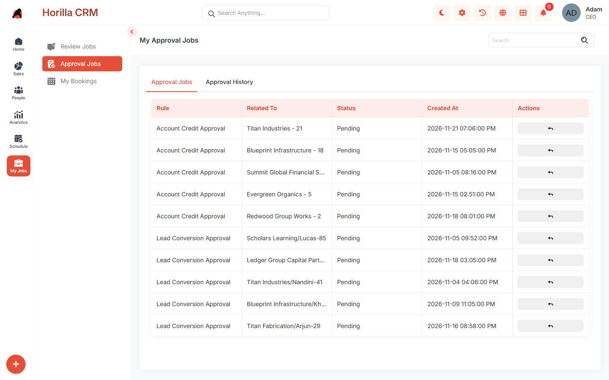
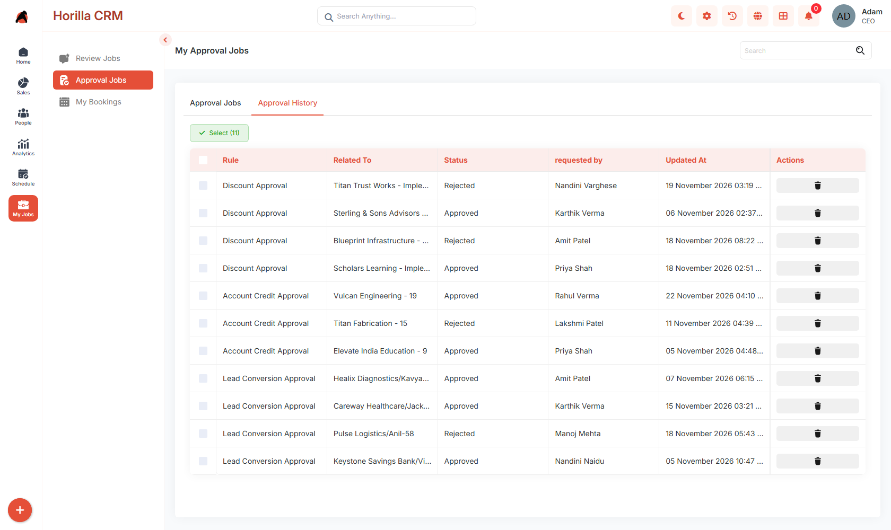
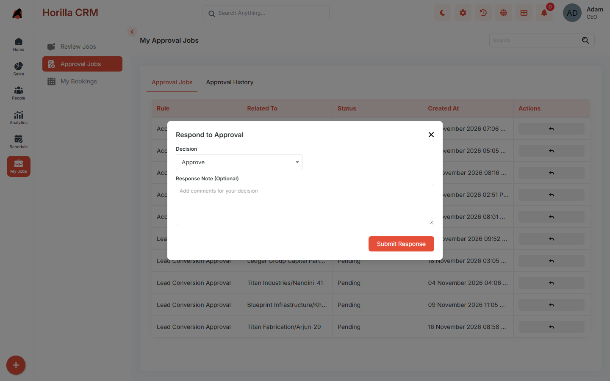

Overview
Go to My Jobs → Approval Jobs. The page title is My Approval Jobs. It has two tabs: Approval Jobs for requests still waiting, and Approval History for requests that are already decided.
Creating a process, opening its detail and adding rules are set up under Settings → Process Builder → Approval Process.
Approval Jobs
The Approval Jobs tab lists the pending requests where you are an approver.
| Column | Contents |
|---|---|
| Rule | The approval rule that caught the record. Click it to open the request. |
| Related To | The record waiting for a decision. |
| Status | Pending while the request is still open. |
| Created At | When the request was created. |
| Actions | Respond opens Respond to Approval. |

Approval History
Open the Approval History tab on the same page. It lists requests that are no longer pending: approved or rejected. Columns are Rule, Related To, Status, requested by and Updated At.

Click a row to open its timeline: the approvers, the time of each decision and any notes. On a rejected record, the person who requested it can click Resubmit to start the process again from the first step. A superuser can resubmit as well.
Respond to Approval
On a pending job, click Respond. The form title is Respond to Approval.

| Field | Description |
|---|---|
| Decision | Approve, Reject or Delegate. |
| Delegate To | Shown when Decision is Delegate. The user who should take the request. |
| Response Note (Optional) | Comment for the decision. Placeholder: Add comments for your decision. |
Click Submit Response to send it.